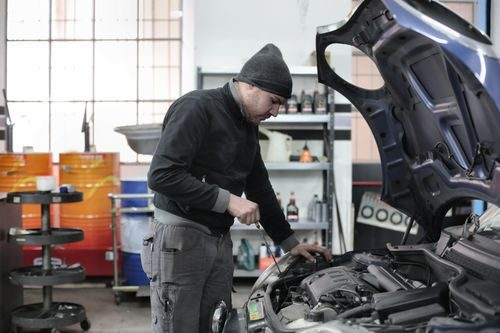

Services at Foreign Affairs Autowerks
European and German auto service in Lexington.
Services
Service for German makes and models
Porsche, Ferrari, BMW, Mercedes, Lamborghini, Audi, and VW, per the shop's own listing.
Parts sourcing
Service and repair
Gallery


All gallery photos are stock photos, labeled as such. They show the kind of work and setting described on this page, not this business.
Contact
Foreign Affairs Autowerks serves Lexington, KY. Questions? Call +1 859-309-1919.